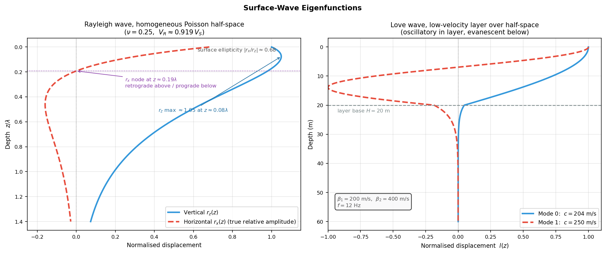
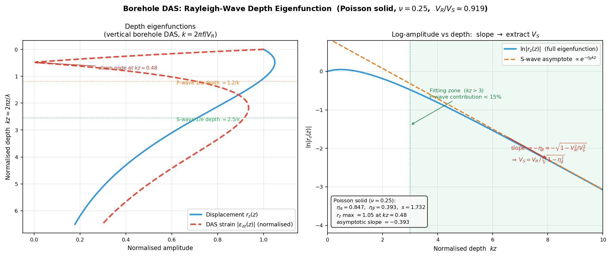

面波与尾波：波速提取与监测¶
引言¶
面波（surface waves）和尾波（coda waves）是地震记录中两类截然不同但都携带丰富介质信息的波场成分。面波沿地球表面传播，具有频散特性，不同频率成分"感知"的深度不同，因此其相速度随频率的变化直接反映了地下 S 波速度随深度的结构。尾波是直达波之后到达的散射波场，其衰减速率反映 \(Q_c\)（尾波品质因子），而其精细时间结构对介质速度变化极为敏感——这是尾波干涉法（Coda Wave Interferometry，CWI）实现速度监测的物理基础。
| 波型 | 波速提取方法 | 灵敏量 | 典型应用 |
|---|---|---|---|
| Rayleigh 波 | 频散曲线 → \(V_S(z)\) 反演 | S 波速度结构 | 近地表成像、工程勘察 |
| Love 波 | 频散曲线 → \(V_S(z)\) 反演 | S 波速度（SH 分量） | 各向异性、S 波分裂 |
| 尾波 | 包络衰减 → \(Q_c\) | 散射/内在衰减 | 震后余震区监测 |
| 尾波（CWI） | 互相关时延 → \(\delta v/v\) | 微小速度变化（0.01%） | 火山、注水、地震前兆 |
可观测条件¶
面波和尾波对记录条件有各自的适用范围。了解这些条件是在处理数据前判断方法可行性的第一步。
面波何时能被清晰观测¶
1. 震源深度——最关键的控制因素
面波由地表附近的震源激发，其振幅随震源深度 \(h\) 的增加迅速衰减。深度为 \(h\) 的震源激发面波的振幅近似正比于：
其中 \(k = 2\pi/\lambda\) 为水平波数。实际经验规律：
| 震源深度 | 面波发育程度 |
|---|---|
| \(h < \lambda/2\) | 强烈激发，基阶模式主导 |
| \(\lambda/2 < h < 2\lambda\) | 中等，频散可辨但振幅下降 |
| \(h > 2\lambda\) | 面波幅度显著衰减，基阶被抑制 |
实际含义： - 浅震（\(h < 30\) km）→ 长周期面波（\(T > 10\) s）强烈发育； - 深震（\(h > 200\) km）→ 周期短于 100 s 的面波幅度极弱； - 工程面波 MASW（\(f = 1\)–50 Hz，\(\lambda \sim\) 10–200 m）：天然地震对浅表结构而言震源太深，实际需改用锤击、落锤等人工震源。
深震的面波陷阱
中深源地震（\(h \sim 100\)–200 km）记录上有时仍可见面波包络，但高阶模态往往主导基阶，频散曲线拾取容易出错。处理此类数据前须确认震源深度。
2. 震中距——频散展开需要传播路径
面波频散（不同频率以不同速度传播）需要足够的距离才能将各频率成分的到达时刻分开：
- 区域/全球面波（\(T = 10\)–300 s）：震中距 \(\Delta \gtrsim 10°\)（\(\sim\)1000 km）时，面波与体波多次波（PP、SS）分离良好；\(\Delta < 300\) km 时面波包络与 S 波尾部叠加；
- 工程 MASW（\(f = 1\)–50 Hz）：阵列长度需 \(\geq \lambda_\text{max}\)（最低目标频率对应的波长），过短则低频模态采样不足，频散曲线偏高；
- 被动源噪声互相关：台间距 \(d\) 决定可提取波长范围，一般要求 \(\lambda \in [2d,\; 3\,d_\text{array}]\)（\(d_\text{array}\) 为阵列孔径）。
3. 场地与路径条件
- 软沉积盆地：低速层放大面波振幅，有利于激发，但高阶模态也同时增强，基阶频散拾取需小心；
- 横向不均匀路径：强侧向折射引起相速度系统偏差，互相关方法在此情形下需修正方位角；
- 噪声方位均匀性：被动源互相关要求噪声源分布尽量均匀。海岸站点常受单方向海浪主导，Rayleigh 波收敛快，Love 波互相关收敛慢（需更长记录）。
尾波何时能被清晰观测¶
1. 介质非均匀性——直接决定尾波能量
尾波来自散射体（断层、孔隙、矿物边界等）的多次散射，散射体越密集，尾波越强且持续越长。
| 构造环境 | 尾波特征 | 典型 \(Q_c\)（1 Hz） |
|---|---|---|
| 活火山区 | 强散射，尾波长 | 50–150 |
| 活动断层带 | 中等散射 | 100–300 |
| 稳定地台 / 克拉通 | 弱散射，尾波短 | 600–1500 |
| 冰川（冰体内部） | 强散射（晶粒/裂缝） | 50–200 |
2. 震中距范围
尾波分析要求将直达波与散射场清晰分离，震中距过近或过远均破坏这一条件：
- \(\Delta < 20\)–30 km：P、S 到时差极短，尾波起始时间太早，体波波尾与散射场混叠；
- \(\Delta > 400\)–500 km：Lg、Pn 等区域震相和面波陆续到来，与散射尾波叠加，简单尾波模型不再成立。
尾波起始时间的经验准则
通常取 \(t_\text{start} \geq 2\,t_S\)（两倍 S 波走时之后）作为尾波时窗起点，此时各体波震相基本到完，进入近似均匀衰减的散射场。
3. 震级范围
| 震级 | 主要问题 | 处理建议 |
|---|---|---|
| \(M < 1\)–2 | 信噪比过低，尾波淹没在噪声中 | 提高截止频率；尽量近场布设台站 |
| \(M = 1\)–5 | 最适合 \(Q_c\) 与 CWI 分析 | 标准流程 |
| \(M > 6\) | 余震序列、强非线性散射干扰 | 严格剔除余震时窗，谨慎解释结果 |
4. 时窗选取——CWI 灵敏度与信噪比的权衡
尾波干涉法测速不确定度为 \(\sigma_{\delta v/v} \approx T/(2\pi f \bar{t}\,\text{CC})\)，时窗越晚（\(\bar{t}\) 越大）灵敏度越高，但尾波能量随时间呈指数衰减（\(\propto e^{-\pi f t / Q_c}\)）。实用上限估计：
超过此时间后互相关系数 CC 急剧下降，测量误差反而增大。
面波的基本特性¶
Rayleigh 波与 Love 波¶
| 性质 | Rayleigh 波 | Love 波 |
|---|---|---|
| 粒子运动 | 竖向 + 径向椭圆极化 | 水平横向（SH 方向） |
| 存在条件 | 任何弹性半空间 | 需要低速表层（波导） |
| 速度（半空间） | \(V_R \approx 0.92\,V_S\) | 介于上层与半空间 \(V_S\) 之间 |
| 对 DAS 的灵敏度 | 沿缆方向分量：\(\cos^2\theta\) | 垂直缆方向：DAS 不响应 |
频散特性¶
面波最重要的特征是频散（dispersion）：不同频率的面波以不同速度传播，因为不同频率对应不同的穿透深度。
相速度 \(c(f)\)：等相位面的传播速度，决定波形的形状。
群速度 \(U(f)\)：能量包络的传播速度，由相速度对频率的导数决定：
正频散与逆频散
- 正频散（normal dispersion）：低频传播更快（\(\mathrm{d}c/\mathrm{d}f < 0\)），对应"软表层 + 硬下伏层"的典型地壳结构——速度随深度增加。
- 逆频散（inverse dispersion）：高频传播更快（\(\mathrm{d}c/\mathrm{d}f > 0\)），对应低速层存在（如软夹层）或速度随深度减小的情形。
深度灵敏度规则¶
Rayleigh 波相速度 \(c(f)\) 对 S 波速度在深度 \(z\) 处的灵敏度近似服从以下经验规律：
即频率 \(f\) 的 Rayleigh 波对深度约 \(\lambda/3\) 处的 \(V_S\) 最为敏感，\(\lambda\) 为对应波长。
这一规则给出了频率-深度对应关系的快速估算： - 低频 → 长波长 → 深部结构 - 高频 → 短波长 → 浅部结构
Rayleigh 波速度与 S 波速度的关系¶
对于泊松比为 \(\nu\) 的均匀半空间，Rayleigh 波相速度近似满足：
典型泊松比 \(\nu = 0.25\) 时：
分层介质
上式仅适用于均匀半空间。对于分层介质，\(V_R(f)\) 是频率的函数（即频散曲线），需通过正演模拟（Thomson-Haskell 矩阵法）计算理论频散，再反演得到 \(V_S(z)\)。
面波本征函数¶
从波动方程到本征值问题¶
水平分层介质中，设平面面波沿 \(x\) 方向传播，位移场可分离变量：
代入弹性运动方程，配合两个边界条件——地表自由（应力为零）、深部衰减（\(z \to \infty\) 时位移趋于零）——构成一个 Sturm-Liouville 型本征值问题：给定频率 \(\omega\)，只有离散的波数 \(k_n(\omega)\)（\(n = 0, 1, 2, \dots\)）能使方程存在非零解。
- 本征值 \(k_n(\omega)\) → 相速度 \(c_n = \omega/k_n\)，即频散曲线；
- 本征函数 \(\mathbf{r}_n(z)\) → 该模式的位移随深度的分布形状。
频散曲线与本征函数是同一个本征值问题的两个输出：前者回答"传多快"，后者回答"波住在哪个深度"。
| 波型 | 耦合分量 | 本征函数 | 物理意义 |
|---|---|---|---|
| Rayleigh | P-SV（\(u_x\), \(u_z\)） | \(r_x(z)\), \(r_z(z)\) | 径向/竖向位移随深度分布 |
| Love | SH（\(u_y\)） | \(l(z)\) | 横向位移随深度分布 |
半空间 Rayleigh 波本征函数（解析解）¶
均匀半空间是唯一存在解析解的情形（此时无频散，仅有基阶模式）。将各分量归一化至地表值为 1：
其中 \(k = \omega / V_R\)，而
分别是 P 波项和 S 波项的垂向衰减系数。两个分量都是 P 项（\(e^{-\eta_\alpha kz}\)，快衰减）与 S 项（\(e^{-\eta_\beta kz}\)，慢衰减）的线性组合，但权重不同——这正是两分量深度行为迥异的原因。Poisson 固体（\(\nu = 0.25\)）的数值特征：
| 特征 | 数值 | 说明 |
|---|---|---|
| 地表椭圆率 \(\lvert r_x/r_z\rvert_{z=0}\) | \(\approx 0.68\) | H/V 谱比的理论基线 |
| \(r_x\) 节点深度 | \(z \approx 0.19\lambda\) | 水平分量变号 |
| \(r_z\) 极大深度 | \(z \approx 0.08\lambda\)（幅值 \(\approx 1.05\)） | 竖向分量在地表下略有增强 |
| \(r_z(\lambda/2)\) | \(\approx 0.59\) | 半波长深度仍有近六成振幅 |
| \(r_z(\lambda)\) | \(\approx 0.19\) | "穿透深度约一个波长"的定量依据 |
逆进椭圆 → 顺进椭圆
地表处 \(r_x\) 与 \(r_z\) 相位差 \(90°\)，质点做逆进椭圆（retrograde）运动。在 \(z \approx 0.19\lambda\) 处 \(r_x\) 变号，其下质点运动转为顺进（prograde）。地表 H/V 椭圆率随频率的变化也常被用作 \(V_S\) 结构的附加约束。
Love 波本征函数（低速层上覆半空间）¶
Love 波需要波导（低速表层）才能存在。对厚度 \(H\)、速度 \(\beta_1\) 的单层覆盖半空间（\(\beta_2 > \beta_1\)）的情形：
层内为驻波式振荡（余弦），半空间中指数衰减，相速度 \(c \in (\beta_1, \beta_2)\)，由频散方程决定：
模式结构：
- 基阶（\(n=0\)）：层内无节点，能量集中于表层；
- 第 \(n\) 阶：层内有 \(n\) 个节点，穿透更深、相速度更高；
- 第 \(n\) 阶模式仅当 \(f > f_n\) 时存在，截止频率为：
本征函数决定深度灵敏度¶
面波反演中的灵敏度核直接由本征函数构造。由 Rayleigh 变分原理，介质扰动 \(\delta\beta(z)\) 引起的相速度扰动为：
核函数 \(K_\beta(z)\) 是本征函数及其导数的二次组合，按模式能量积分归一化。定性规律：
- \(K_\beta(z)\) 大 ⟺ 该深度上本征函数振幅大（波的能量"住在"那里）；
- Rayleigh 基阶 \(K_\beta\) 峰值位于 \(z \approx \lambda/3\)——这正是上文「深度灵敏度规则」中 \(\lambda/3\) 经验公式的理论来源；
- 高阶模态本征函数穿透更深，其核函数峰值也更深，联合多模式反演可显著改善深部分辨率。
本征函数的三个实用角色
- 正演：Thomson-Haskell / 传播矩阵法计算频散曲线时同步给出本征函数；
- 反演：灵敏度核（Fréchet 导数）由本征函数构造，决定各频率约束哪个深度；
- 观测：竖直钻孔 DAS 直接采样 \(\mathrm{d}r_z/\mathrm{d}z\)（见下文井下 DAS 一节），地表 H/V 椭圆率对应 \(|r_x/r_z|_{z=0}\)。

图 4：左图——Poisson 半空间中 Rayleigh 波位移本征函数：蓝色实线为竖向分量 \(r_z(z)\)，在 \(z \approx 0.08\lambda\) 处略有增强（\(\approx 1.05\)）后单调衰减；红色虚线为水平分量 \(r_x(z)\)（按真实相对振幅缩放，地表 \(|r_x/r_z| \approx 0.68\)），在 \(z \approx 0.19\lambda\) 处变号——其上质点逆进、其下顺进。右图——低速层（\(\beta_1 = 200\) m/s，\(H = 20\) m）覆盖半空间（\(\beta_2 = 400\) m/s）中 12 Hz Love 波本征函数：基阶（蓝）层内无节点、能量集中于表层；一阶（红）层内一个节点、穿透更深。灰色虚线为层界面。频散曲线的提取与反演¶
提取方法¶
主动源 MASW（多道面波分析）¶
使用线性排列的多个检波器，对主动源（锤击、炸药）产生的面波记录进行频率-速度（f-v）变换：
其中 \(\hat{u}(f,x)\) 是各道的频率域位移，\(c\) 为试验相速度。对 \(|P(f,c)|\) 取最大值即可拾取各频率对应的相速度，得到基阶（和高阶）频散曲线。
被动源噪声互相关¶
无主动震源时，利用环境噪声（交通、海浪等）在不同台站间的互相关函数（Cross-Correlation Function，CCF）：
两台之间的 CCF 的包络近似于两台之间的格林函数（表面波响应），从中可提取 Rayleigh 波和 Love 波的群速度或相速度。DAS 阵列天然适合这一方法（高道密度 + 长连续记录）。
井下 DAS 面波监测与深度衰减分析¶
将 DAS 光缆布设于竖直钻孔中，可直接观测 Rayleigh 波振幅随深度的倏逝（evanescent）衰减——这是地面阵列无法触及的深度维度。
观测几何与测量量
竖直钻孔 DAS 的轴向即深度方向 \(z\)，测量量为轴向应变：
对于沿水平方向传播的 Rayleigh 波，\(u_z(z, t) = r_z(z)\cdot A(t)\)，各深度上的波形同时到达（水平慢度 \(p_z = 0\)）。因此：
- 无法从深度间的时差估算相速度；
- 可以从深度振幅剖面直接读出本征函数 \(r_z(z)\)。
与地面 DAS 的互补性
地面 DAS 测量水平应变，对面波有 \(\cos^2\theta\) 的方位角响应；竖直钻孔 DAS 测量竖向应变，对所有入射方位一视同仁，适合量化深度衰减。
Rayleigh 波深度本征函数
对于均匀弹性半空间，竖向位移随深度的本征函数（归一化至地表为 1，推导见上文「面波本征函数」一节）为：
其中 \(k = 2\pi f / V_R(f)\)，而
分别是 P 波和 S 波的垂向衰减系数。对于 Poisson 固体（\(\nu = 0.25\)，\(V_R \approx 0.919\,V_S\)）：
| 参数 | 数值 | 特征深度尺度 |
|---|---|---|
| \(\eta_\alpha\) | \(\approx 0.848\) | \(\sim \lambda/5.3\)（P 波快速衰减） |
| \(\eta_\beta\) | \(\approx 0.393\) | \(\sim \lambda/2.5\)（S 波慢衰减，深部主导） |
| \(2/(1+\eta_\beta^2)\) | \(\approx 1.732\) | S 项权重（P 项权重为 \(-1\)，两项符号相反） |
P、S 两项符号相反，使 \(r_z\) 在 \(z \approx 0.08\lambda\) 处出现约 5% 的浅部极大；当 \(kz \gtrsim 3\) 后，P 波项贡献降至 15% 以下并继续快速减小，本征函数趋于单指数：
从深度衰减提取 S 波速度
第一步：独立估算 \(V_R(f)\)
由于钻孔内各深度同时到达，相速度须从外部获取： - 地表 DAS/台站 f-v 变换拾取频散曲线； - 主动源：已知震源距除以到达时刻。
第二步：对钻孔幅度剖面做半对数线性拟合
在 S 波主导区（\(kz \in [3,\;6]\)）拟合 \(\ln|r_z(z, f)|\) 对 \(z\) 的斜率 \(-b(f)\)：
第三步：联立求解 \(V_S\)
此式将地表测量的 \(V_R\) 与钻孔测量的衰减斜率 \(b\) 结合，直接给出 \(V_S\) 估算，无需水平台站阵列——在海底、冰川钻孔等难以布设地面阵列的环境中具有独特价值。
实用要点
- 拟合区间：\(kz \in [3,\;6]\)；过浅两指数叠加偏离线性，过深信噪比不足。残余 P 项使拟合斜率略缓、\(V_S\) 低估约 2%，要求更高精度时可直接用双指数模型拟合；
- 标距校正：若标距 \(L\) 满足 \(\eta_\beta kL > 0.1\)，需将实测斜率乘以校正因子 \(\mathrm{sinc}^{-1}(\eta_\beta kL/2)\)；
- 分层介质：各频率提取的 \(V_S\) 对应不同有效深度（\(\sim \lambda/4\)），对多个频率重复上述步骤即可得到 \(V_S(z)\) 剖面。

图 3：左图——Poisson 固体中 Rayleigh 波深度本征函数。蓝色实线：竖向位移 \(r_z(z)\)，在 \(kz \approx 0.48\)（\(z \approx 0.08\lambda\)）处略有增强后单调衰减；红色虚线：DAS 测量的轴向应变 \(|\varepsilon_{zz}|\)，在 \(kz \approx 0.48\) 处有一节点；橙色/绿色水平虚线分别标注 P 波和 S 波的 \(1/e\) 特征深度（以 \(kz\) 为归一化深度坐标）。右图：对数幅度与归一化深度的关系，深部（绿色区域，\(kz>3\)）渐近为斜率 \(-\eta_\beta\) 的直线；拟合该斜率并结合已知 \(V_R(f)\) 即可提取 \(V_S\)。频散曲线反演¶
已知观测频散曲线 \(c^\text{obs}(f_i)\)，通过最小化残差估计 \(V_S(z)\) 模型：
其中 \(\mathbf{m}\) 为各层的 \(V_S\)（和厚度），\(\mathbf{c}^\text{pred}\) 通过 Thomson-Haskell 矩阵法正演计算，正则化项 \(\varepsilon^2\|\mathbf{D}\mathbf{m}\|^2\) 约束模型光滑性。
 图 1：左图——双层模型（软层覆硬半空间）的 Rayleigh 波频散曲线，蓝色为相速度 \(c(f)\)，红色为群速度 \(U(f)\)，低频对应深部高速，高频对应浅层低速；右图——不同频率对应的深度灵敏度核，峰值深度约为 \(\lambda/3\)，频率越低穿透越深。
图 1：左图——双层模型（软层覆硬半空间）的 Rayleigh 波频散曲线，蓝色为相速度 \(c(f)\)，红色为群速度 \(U(f)\)，低频对应深部高速，高频对应浅层低速；右图——不同频率对应的深度灵敏度核，峰值深度约为 \(\lambda/3\)，频率越低穿透越深。
尾波（Coda Waves）¶
物理本质¶
地震波在非均匀介质中传播时，与随机分布的散射体（断层、孔隙、矿物边界等）发生多次散射，形成在直达 P 波和 S 波之后到达的尾波（coda waves）。
尾波的两个关键特征：
- 振幅包络的衰减：在简单单次反散射模型（Aki & Chouet 1975）中，尾波均方振幅随延迟时间 \(t\)（从震源起算）衰减为：
- 对散射体分布的平均：由于尾波路径包括所有可能的散射路径，其统计性质对路径几何不敏感，仅与介质的平均衰减/散射特性有关。
尾波品质因子估计¶
对上式取对数：
因此，对固定频率 \(f\)，作 \(\ln[\langle A^2\rangle \cdot t^3]\) 关于 \(t\) 的线性拟合，斜率 \(m = -2\pi f / Q_c\)，得到：
Qc 的物理解读
\(Q_c\) 同时受固有衰减（内摩擦）和散射衰减两者影响，难以直接分离，但作为路径平均的总衰减指标仍然有实际应用价值。
尾波干涉法（Coda Wave Interferometry，CWI）¶
原理¶
尾波晚期成分沿极长的散射路径传播，其总路径长度 \(L \sim vt\)（\(t\) 为延迟时间，\(v\) 为平均速度）。当介质速度发生微小变化 \(\delta v\) 时，每条路径产生的时间延迟为：
由于尾波是所有路径之和，平均时延为：
其中 \(\bar{t}\) 是尾波时窗的中心时间，\(\delta t\) 是两次记录尾波之间的互相关时延。
关键优势：延迟时间越长，路径越长，对同等 \(\delta v/v\) 产生的相位变化越大（\(\delta\phi \propto t\,\delta v/v\)），因此尾波晚期对速度变化极为灵敏，可检测到 \(\delta v/v \sim 0.01\%\) 甚至更小的变化。
时延测量：双记录法（Doublet Method）¶
对两次在相同地点记录的地震波形（参考记录 \(u_1(t)\) 和当前记录 \(u_2(t)\)），在尾波时窗 \([t_a, t_b]\) 内计算互相关函数：
互相关峰值对应的时延 \(\hat{\tau}\) 即为 \(\delta t\)，代入上式即可估计速度变化：
时间拉伸法（Stretching Method）¶
当速度均匀变化时，\(u_2(t) \approx u_1\!\left(t\,(1 + \delta v/v)\right)\)（时间轴整体被压缩）。定义拉伸因子 \(\alpha\)，寻找使互相关系数 \(\text{CC}(\alpha)\) 最大的 \(\alpha\)：
则 \(\delta v/v = -\hat\alpha\)。
与双记录法相比，时间拉伸法在低信噪比时更稳健，但假设速度变化在空间上均匀。
时窗越晚，灵敏度越高
\(\delta v/v\) 的测量不确定度近似为 \(\sigma_{\delta v/v} \approx T/(2\pi f \bar{t}\,\text{CC})\)，其中 \(T\) 为周期，CC 为互相关系数。因此选用更晚的尾波时窗（大 \(\bar{t}\)）可以显著提高灵敏度，但需同时保证足够的信噪比。
 图 2：左图——参考尾波（蓝）与速度增加 1% 后的扰动尾波（红），橙色窗口为 CWI 分析时段；绿色虚线为理论包络 \(\propto e^{-\pi f_0 t/Q_c}\)；右图——尾波时窗内的互相关函数，峰值对应时延 \(\delta t\)，代入公式得 \(\delta v/v \approx +1.1\%\)（真实值 1.0%）。
图 2：左图——参考尾波（蓝）与速度增加 1% 后的扰动尾波（红），橙色窗口为 CWI 分析时段；绿色虚线为理论包络 \(\propto e^{-\pi f_0 t/Q_c}\)；右图——尾波时窗内的互相关函数，峰值对应时延 \(\delta t\)，代入公式得 \(\delta v/v \approx +1.1\%\)（真实值 1.0%）。
方法对比与选用指南¶
| 目标 | 推荐方法 | 所需数据 | 分辨率 |
|---|---|---|---|
| 浅层 \(V_S(z)\)（工程/场地） | MASW 主动源 + 频散反演 | 主动震源 + 线性排列 | 横向数十米，纵向数米 |
| 区域 \(V_S\) 结构（地壳） | 被动噪声互相关 + 面波层析 | 台网背景噪声 | 数十至数百公里 |
| 路径平均衰减 | 尾波 \(Q_c\) 估计 | 单台单事件 | 路径平均 |
| 速度时变监测（天/月/年） | CWI 双记录法 / 拉伸法 | 重复事件或周期性噪声 | \(\delta v/v \sim 0.01\%\) |
| 密集近地表速度监测 | DAS 噪声互相关 + CWI | 连续 DAS 记录 | 分米级道距 |
DAS 与面波/尾波分析的结合¶
DAS + 噪声互相关： - DAS 阵列沿光缆提供数千虚拟台，道间距低至 1 m - 任意台对互相关自动给出高空间密度的格林函数采样 - 可提取 Rayleigh 波频散曲线，反演精细 \(V_S(z)\) 剖面
DAS + CWI： - 利用连续 DAS 记录中重复路径的噪声互相关或重复地震事件 - 监测流体注入、诱发地震、火山等引起的速度时变 - 高道密度 → 速度变化的空间分布成像
DAS 对面波的方向性响应
DAS 测量沿光纤轴的应变，对 Rayleigh 波响应与缆-射线夹角的 \(\cos^2\theta\) 成正比。当光缆与面波传播方向平行时响应最强，垂直时为零。Love 波（纯 SH）对平行铺设的 DAS 不响应。详见 DAS 分布式声学传感。
Python 示例¶
以下代码生成本节中的两幅图。
import numpy as np
import matplotlib.pyplot as plt
from scipy.signal import correlate, correlation_lags
# ── 图 1：面波频散曲线与深度灵敏度核 ─────────────────────
fig, axes = plt.subplots(1, 2, figsize=(12, 5))
f = np.linspace(0.5, 50, 600)
Vs1, Vs2 = 200.0, 600.0
VR1, VR2 = Vs1 * 0.919, Vs2 * 0.919
h = 20.0 # 第一层厚度 (m)
f_trans = (VR1 + VR2) / 2 / (2 * h)
# Lorentzian 过渡：U(f) = VR1 + (VR2-VR1)*(1-x²)/(1+x²)²，恒正
x = f / f_trans
c_ph = VR1 + (VR2 - VR1) / (1 + x**2)
U = VR1 + (VR2 - VR1) * (1 - x**2) / (1 + x**2)**2
ax = axes[0]
ax.fill_between(f, U, c_ph, where=(c_ph >= U), alpha=0.15, color='#3498db',
label='c − U (dispersion zone)')
ax.plot(f, c_ph, color='#3498db', lw=2.5, label='Phase velocity $c(f)$')
ax.plot(f, U, color='#e74c3c', lw=2.5, ls='--', label='Group velocity $U(f)$')
ax.set(xlabel='Frequency (Hz)', ylabel='Velocity (m/s)',
title='Rayleigh Wave Dispersion Curve\n(2-layer: soft over hard)',
xlim=[0.5, 50], ylim=[0, VR2 * 1.12])
ax.legend(fontsize=9); ax.grid(True, alpha=0.3)
z = np.linspace(0, 120, 400)
ax = axes[1]
for fi, col in zip([5, 15, 30, 50], ['#2ecc71', '#3498db', '#e67e22', '#e74c3c']):
idx = np.argmin(np.abs(f - fi))
z_pk = c_ph[idx] / (3 * fi)
K = np.exp(-(z - z_pk)**2 / (2 * (max(z_pk * 0.55, 1.0))**2))
ax.plot(K / K.max(), z, color=col, lw=2.2, label=f'{fi} Hz (peak ≈ {z_pk:.0f} m)')
ax.set(xlabel='Normalised sensitivity $\\partial c/\\partial V_S(z)$', ylabel='Depth (m)',
title='Depth Sensitivity Kernels\n(Rayleigh, fundamental mode)',
ylim=[120, 0])
ax.legend(fontsize=9, loc='lower right'); ax.grid(True, alpha=0.3)
plt.tight_layout()
plt.savefig('docs/assets/images/sw_dispersion.png', dpi=150, bbox_inches='tight')
# ── 图 2：尾波干涉法 ──────────────────────────────────────
rng = np.random.default_rng(42)
dt = 0.005; t = np.arange(0, 25, dt)
f0 = 4.0; t0 = 2.0; Qc = 70
def make_coda(t, t0, f0, Qc, seed=7):
r = np.random.default_rng(seed)
N = 600
arr = r.uniform(t0, 20.0, N)
amp = r.exponential(1.0, N)
phi = r.uniform(0, 2*np.pi, N)
s = np.zeros(len(t))
for a, A, ph in zip(arr, amp, phi):
m = t >= a
s[m] += A*np.cos(2*np.pi*f0*(t[m]-a)+ph)*np.exp(-np.pi*f0*(t[m]-a)/Qc)
s[t < t0] = 0
return s / (np.max(np.abs(s)) + 1e-10)
coda_clean = make_coda(t, t0, f0, Qc)
dv_v_true = 0.01 # 1% velocity increase
coda_new_c = np.interp(t * (1 + dv_v_true), t, coda_clean, left=0.0, right=0.0)
coda_ref = coda_clean + rng.normal(0, 0.05, len(t))
coda_new = coda_new_c + rng.normal(0, 0.05, len(t))
t_a, t_b = 6.0, 18.0
win = (t >= t_a) & (t <= t_b)
ref_w = coda_ref[win]; new_w = coda_new[win]
xc = correlate(new_w, ref_w, mode='full')
lags = correlation_lags(len(new_w), len(ref_w), mode='full') * dt
xc /= np.linalg.norm(new_w) * np.linalg.norm(ref_w)
peak_lag = lags[np.argmax(xc)]
dv_est = -peak_lag / ((t_a + t_b) / 2) * 100
t_env = t[t >= t0]
A_env = np.exp(-np.pi * f0 * (t_env - t0) / Qc)
fig, axes = plt.subplots(1, 2, figsize=(12, 5))
ax = axes[0]
ax.plot(t, coda_ref, color='#3498db', lw=0.9, alpha=0.9, label='Reference')
ax.plot(t, coda_new - 0.7, color='#e74c3c', lw=0.9, alpha=0.9, label='Perturbed (+1% dv/v)')
ax.plot(t_env, A_env*0.85, color='#2ecc71', lw=2.0, ls='--', alpha=0.8, label='Envelope')
ax.plot(t_env, -A_env*0.85, color='#2ecc71', lw=2.0, ls='--', alpha=0.8)
ax.axvspan(t_a, t_b, alpha=0.09, color='orange', label='CWI window')
ax.set(xlabel='Time (s)', title='Coda Waveforms', xlim=[0, 22])
ax.set_yticks([]); ax.legend(fontsize=8.5); ax.grid(True, alpha=0.25)
ax = axes[1]
zoom = np.abs(lags) < 0.8
ax.plot(lags[zoom]*1000, xc[zoom], color='#9b59b6', lw=2)
ax.axvline(peak_lag*1000, color='red', lw=2, ls='--',
label=f'dt = {peak_lag*1000:.1f} ms → dv/v = {dv_est:.2f}%')
ax.axvline(0, color='gray', lw=0.8, ls=':')
ax.set(xlabel='Lag (ms)', ylabel='Normalised cross-correlation',
title='Coda Cross-Correlation (CWI)')
ax.legend(fontsize=9); ax.grid(True, alpha=0.3)
plt.tight_layout()
plt.savefig('docs/assets/images/coda_cwi.png', dpi=150, bbox_inches='tight')
plt.show()
参考文献¶
- Aki, K., & Chouet, B. (1975). Origin of coda waves: Source, attenuation and scattering effects. Journal of Geophysical Research, 80(23), 3322–3342.
- Aki, K., & Richards, P. G. (2002). Quantitative Seismology (2nd ed.). University Science Books. [第 7 章：面波本征值问题与变分原理]
- Haskell, N. A. (1953). The dispersion of surface waves on multilayered media. Bulletin of the Seismological Society of America, 43(1), 17–34.
- Takeuchi, H., & Saito, M. (1972). Seismic surface waves. Methods in Computational Physics, 11, 217–295.
- Park, C. B., Miller, R. D., & Xia, J. (1999). Multichannel analysis of surface waves. Geophysics, 64(3), 800–808.
- Bensen, G. D., Ritzwoller, M. H., Barmin, M. P., Levshin, A. L., Lin, F., Moschetti, M. P., … & Yang, Y. (2007). Processing seismic ambient noise data to obtain reliable broad-band surface wave dispersion measurements. Geophysical Journal International, 169(3), 1239–1260.
- Snieder, R. (2006). The theory of coda wave interferometry. Pure and Applied Geophysics, 163(2–3), 455–473.
- Sens-Schönfelder, C., & Wegler, U. (2006). Passive image interferometry and seasonal variations of seismic velocities at Merapi Volcano, Indonesia. Geophysical Research Letters, 33(21), L21302.
- Lobkis, O. I., & Weaver, R. L. (2003). Coda-wave interferometry in finite solids: Recovery of P-to-S conversion rates in an elastodynamic billiard. Physical Review Letters, 90(25), 254302.
- Shapiro, N. M., & Campillo, M. (2004). Emergence of broadband Rayleigh waves from correlations of the ambient seismic noise. Geophysical Research Letters, 31(7), L07614.
- Lindsey, N. J., Martin, E. R., Dreger, D. S., Freifeld, B., White, S., Monga, S. K., … & Ajo-Franklin, J. B. (2017). Fiber-optic network observations of earthquake wavefields. Geophysical Research Letters, 44(23), 11–792.